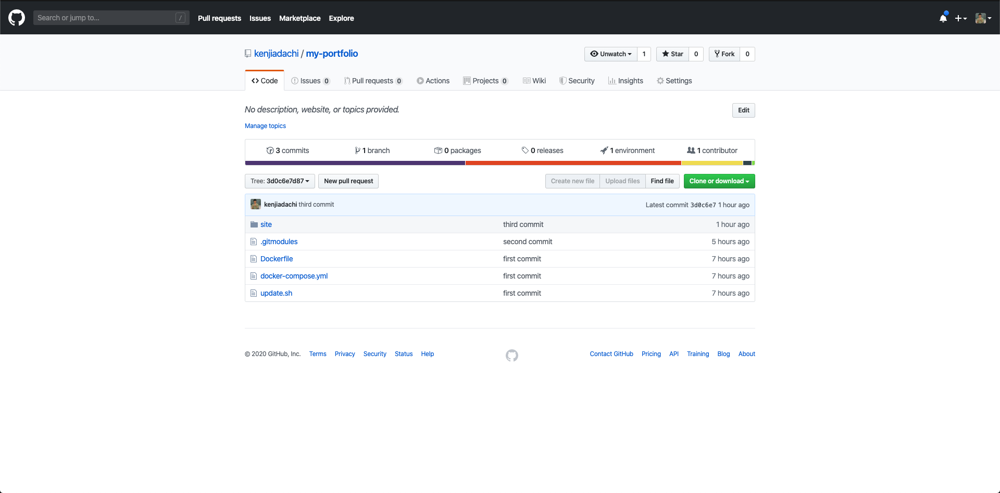
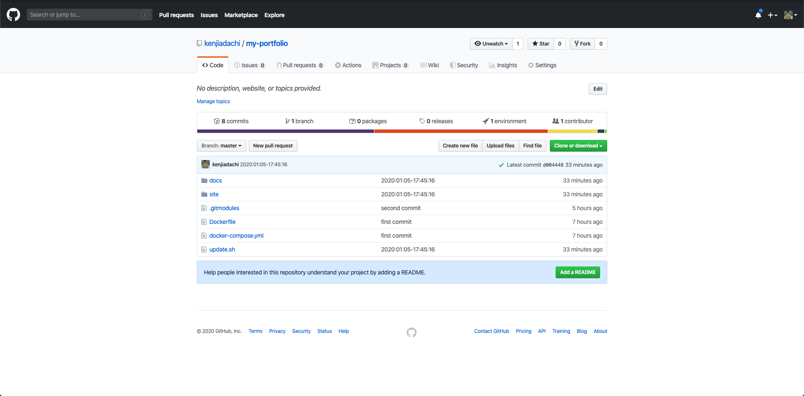
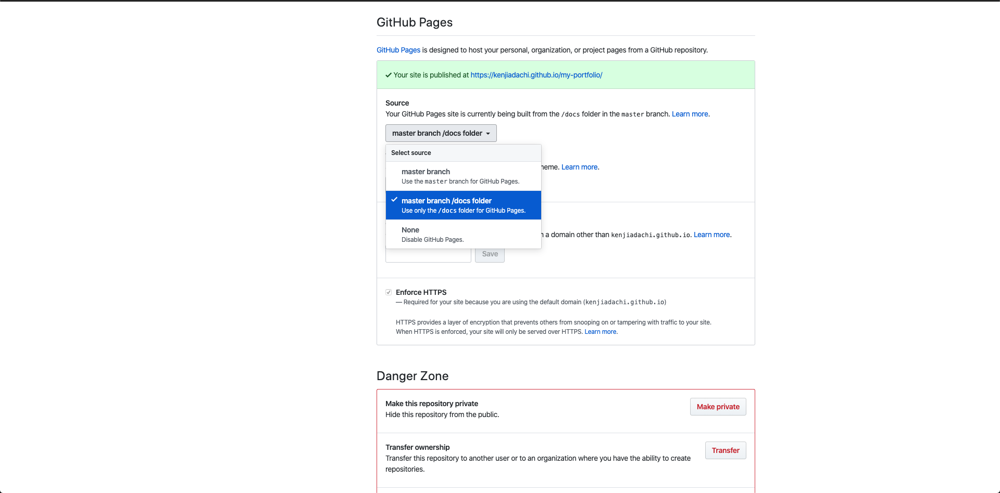

[Hugo]Docker上で管理できるポートフォリオを作ってみたよ
Hugoをつかってこのページを作ってみたので、作り方をまとめてみました。

目次
この記事はこんな人が書いています
株式会社ムジカルを設立し、webアプリケーションの開発、webマーケティングを担当しています。
webアプリケーションでは、Vue.js、Ruby on Rails、Node.jsを用いての開発が得意です。
まったくゼロの状態から、要件定義を含めてシステム開発にとりかかったことで、幅広い知識を学習しながらよしなに進めるスキルを身につけました。
フリーランスとして、エンジニアリングやコンサルティングも行なっています。
詳しくはaboutを読んでみてください。
Hugoをつかってこのページを作ってみたので、作り方をまとめてみました。
ローカルでは、Dockerを用いて仮想環境上で動かしています。
また、ホスティングサービスはGitHub Pagesを用いています。
この記事では、HugoをDocker上で動かし、それをGitHub Pagesで公開するまでをご紹介します。
ことばの紹介
まずは知らない方もいるかと思うので、ことばの紹介から。
わかってるよ！って人は飛ばしてください。
Hugoとは？
Hugoの公式ページによると、
Hugo is one of the most popular open-source static site generators. With its amazing speed and flexibility, Hugo makes building websites fun again.
Google翻訳にぶちこむと
Hugoは、最も人気なオープンソースの静的サイトジェネレーターの1つです。その驚くべき速度と柔軟性により、HugoはWebサイトの構築を再び楽しくします。
とのことです。
これまで、BlogなどはWordPressが主流でしたが、わざわざすべての機能を管理画面からしなくてもよくない？という流れから、このような静的サイトジェネレーターが流行り出しているのかなあという個人的な見解です。
WordPress、ちょっと触っただけでも結構めんどくさいですもんね…
その点、このような静的サイトジェネレーターだとファイルの移動とかするだけで簡単に思った通りになる、というのがいいところかなあと思います。
Hugo以外にも
などが有名ですね。
Dockerとは？
これもDockerの公式ページによると、
The only independent container platform that enables organizations to seamlessly build, share and run any application, anywhere—from hybrid cloud to the edge.
はたまたGoogle翻訳にぶちこむと
組織がハイブリッドクラウドからエッジまで、あらゆるアプリケーションをシームレスに構築、共有、実行できるようにする唯一の独立したコンテナプラットフォーム。
誰とでも簡単に開発環境を共有できるプラットフォーム、といった感じですかね。
僕個人としては、けっこう一人で開発などすることが多いのであまりそのような面では恩恵を受けられていないのですが、ローカルのPCの環境をできるだけ汚したくないので、新しいPCに変えてからはDockerを個人でも使用するようにしています。
rbenvとかpyenvとかあるにはあるけどめんどくさいですもんね。
こっちのバージョンでは入ってるけど、こっちでは入ってなかったっけ？とか。
そーゆーのもふくめて、簡単に作って壊してできるのがDockerのよさかなあと個人でやっている身からは思います。
GitHub Pagesとは？
最後はGitHub Pagesですね。
もちろんこれも公式ページからとってきました。
GitHub Pages is a static site hosting service that takes HTML, CSS, and JavaScript files straight from a repository on GitHub, optionally runs the files through a build process, and publishes a website.
Google翻訳にぶちこんで
GitHub Pagesは、GitHubのリポジトリから直接HTML、CSS、およびJavaScriptファイルを取得し、オプションでビルドプロセスを介してファイルを実行し、Webサイトを公開する静的サイトホスティングサービスです。
ということです。Hugoでgenerateした静的サイトをこちらで公開できるんですね。
他にも有名なものとしては
などがありますね。
Herokuも使おうと思えば使えるんじゃないでしょうか。
わざわざHerokuを使う意味がよくわかりませんが…
つくっていきましょう
さあ、いよいよつくっていきましょう。
Dockerの環境準備
はじめに、Dockerの環境を準備します。
あたらしいディレクトリを作成して、その中に以下の2ファイルをいれてください。
# Dockerfile
FROM node:8
# Download and install hugo
ENV HUGO_VERSION 0.60.1
ENV HUGO_BINARY hugo_extended_${HUGO_VERSION}_Linux-64bit.deb
RUN curl -sL -o /tmp/hugo.deb \
https://github.com/spf13/hugo/releases/download/v${HUGO_VERSION}/${HUGO_BINARY} && \
dpkg -i /tmp/hugo.deb && \
rm /tmp/hugo.deb && \
mkdir /usr/share/blog
WORKDIR /usr/share/blog
RUN npm -g config set user root && \
npm install -g firebase-tools
# Expose default hugo port
EXPOSE 1313
# Automatically build site
ONBUILD ADD site/ /usr/share/blog
ONBUILD RUN hugo -d /usr/share/nginx/html/
# By default, serve site
ENV HUGO_BASE_URL http://localhost:1313
CMD hugo server -b ${HUGO_BASE_URL} --bind=0.0.0.0
# docker-compose.yml
version: '3'
services:
web:
build: .
image: my/hugo
volumes:
- ./site:/usr/share/blog
ports:
- "1313:1313"
stdin_open: true
tty: true
後述しますが、使いたいHugoのthemeがHugoのversionが0.60以上じゃないと使えなかったので、参考にしたサイトから少し修正してあります。
Hugoの設定
次にHugoの設定です。
Dockerfileをおいたディレクトリにターミナルで移動したのち、下記コマンドを入力します。
docker-compose run -w /usr/share web hugo new site blog
すると、こんな返事があったあと、直下にsiteというディレクトリができているはずです。
Creating network "************_default" with the default driver
Congratulations! Your new Hugo site is created in /usr/share/blog.
Just a few more steps and you're ready to go:
1. Download a theme into the same-named folder.
Choose a theme from https://themes.gohugo.io/ or
create your own with the "hugo new theme <THEMENAME>" command.
2. Perhaps you want to add some content. You can add single files
with "hugo new <SECTIONNAME>/<FILENAME>.<FORMAT>".
3. Start the built-in live server via "hugo server".
Visit https://gohugo.io/ for quickstart guide and full documentation.
とりあえず記事を書きはじめたい場合は、
docker-compose run web hugo new post/sample-page.md
などで記事を作成し、書きはじめてください。
ここあたりでgit initなど、gitが使える準備をしておくのがいいかもですね。
さて、ここでテーマの設定をしましょう。
今回はhugo-theme-dreamというテーマを適用しています。
ターミナルで、以下のように入力してください。
場所はDockerfileのあるディレクトリ直下での入力を想定しています。
git submodule add https://github.com/g1eny0ung/hugo-theme-dream.git site/themes/hugo-theme-dream
この後に、site直下のconfig.tomlを以下のように書き換えましょう。
baseurl = "https://*****.github.io/*****/" # 後ほどGitHub Pagesの設定ができたらこちらを修正します。
languageCode = "ja"
defaultContentLanguage = "ja"
title = "Title"
theme = "hugo-theme-dream"
# パスの指定。これをしないとcssがうまく反映されません。
canonifyurls = true
# copyright = ""
# googleAnalyticsのIDをここに入力
googleAnalytics = "*************"
# disqusのShortnameをここに入力(コメントできるようにしたい場合)
disqusShortname = "*************"
enableRobotsTXT = true
[params]
background = "black"
# backgroundImage = "/me/background.jpg"
linkColor = "seagreen"
author = "*************"
# description = ""
# static以降のURLを指定します。
avatar = "/images/avatar.png"
motto = "****************"
# この辺は入れたい人はどうぞ
# email = ""
# github = ""
# linkedin = ""
# codepen = ""
# stackoverflow = ""
siteStartYear = 2020
# favicon = "/favicon.ico"
# dark mode
darkLinkColor = "darkseagreen"
darkNav = true
dark404Button = true
2020/02/29追記
お気づきの方もいらっしゃるかもしれませんが、こちらのページのテーマを変えました。
hugo-theme-dream → hugo-future-imperfect-slim に変更しています。
テーマごとにconfig.tomlの設定も結構変わってくるので、themes/[テーマ名]/exampleSite/config.tomlをコピペして、作りなおすのが早いかと思います。
現状どんな感じか見たい場合は、
docker-compose up
でサーバーを立ち上げ、http://localhost:1313を見てみてください。
すると、ローカル上ではうまく動いているはずです！
GitHub Pagesで公開
さて、いよいよGitHub Pagesで公開しましょう。
今回、GitHubにpushするまではできる前提とさせてください。
多分この辺りはたくさん紹介してくれているページがあるかと思いますので…
さて、GitHubにpushすると、こんな感じになっているはずです。
違いとしては、update.shはまだないはずなので、こちらを追加しておいてください。
# update.sh
#!/bin/bash
# 既存のdocsフォルダの削除
rm -rf docs
# docsファイルの作成
docker-compose exec web hugo
# docsファイルの移動
mv site/public docs
# Commit comment
ct="$(date +'%Y:%m:%d-%H:%M:%S')"
# Management
git add .
git commit -m $ct
git push

ここまでいけばもうすぐです。
Dockerfileをおいたディレクトリで、以下のコマンドを入力してください。
sh update.sh
すると、自動で静的ページを作成し、それを直下のdocsに移動、GitHubにpushまでしてくれるはずです。
GitHubのページを更新してみると、以下のようになっていませんか？(docsができているはず)

こうなっていれば、Settingsに移動し、部分を選択されているものに変えてください。

すると、緑色の部分にあるURLで静的ページとして公開されているはずです。
(最初はとくに反映まで時間がかかります。気長に待ちましょう。)
これでポートフォリオサイトの完成です！
修正して公開したい場合は、再度sh update.shと打ち込めば自動で反映されるはずです。
参考にした記事
- [Docker知識不要]Docker上でのHugo環境の作り方
- HugoでWebサイトを立ち上げる+テーマを適用してみる
- Hugo Part 2 - Hugo で github にブログを立ち上げる
- hugo-theme-dreamのドキュメント